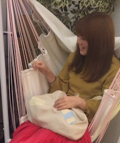

- 名前 ：
- 石丸 亜美(ｲｼﾏﾙ ﾂｸﾞﾐ)
- 所在地 ：
- 千葉県
- 趣味 ：
- ものづくり(ハンドメイド雑貨・料理etc.)・音楽
- 尊敬する人 ：
- 野原しんのすけ
- スキル ：
- PHP,Ruby,HTML,CSS,JavaScript,Docker,Vagrant,Photoshop,Illustrator,etc...
- Facebook:
- https://www.facebook.com/thugumi.ishimaru
- Twitter:
- @tsugu_maru_san
- Qiita:
- @tsugu_maru_san